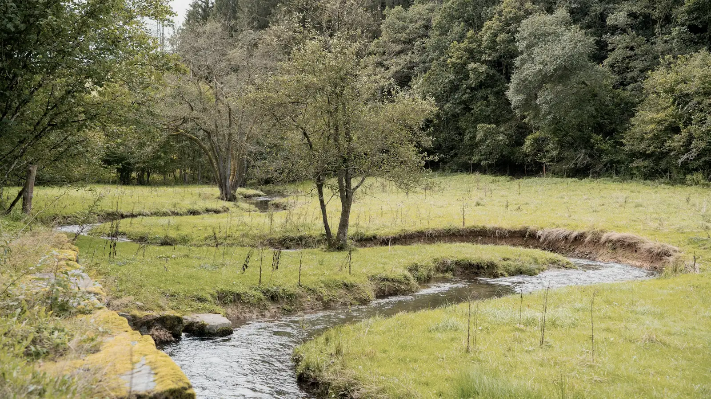
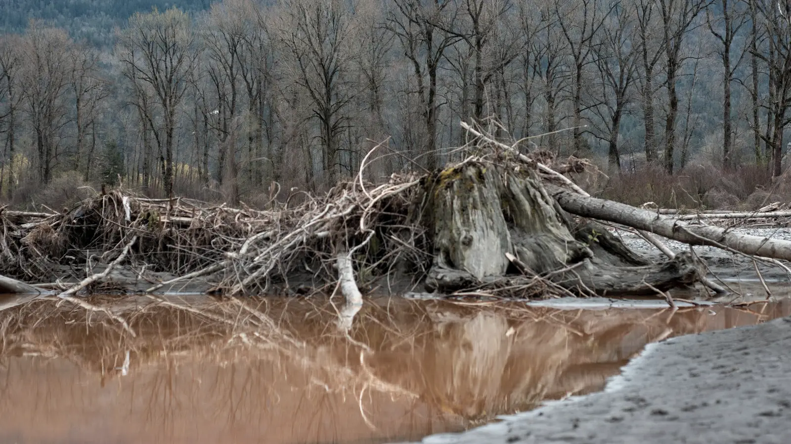
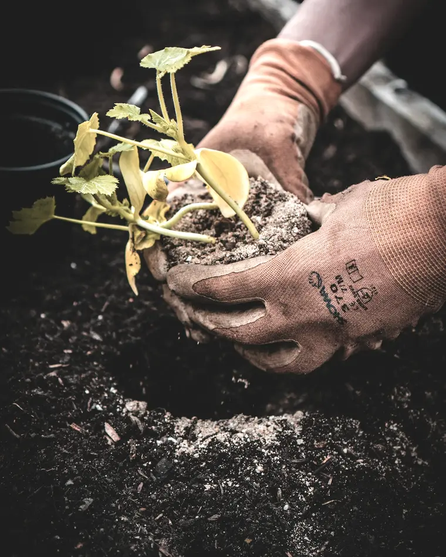
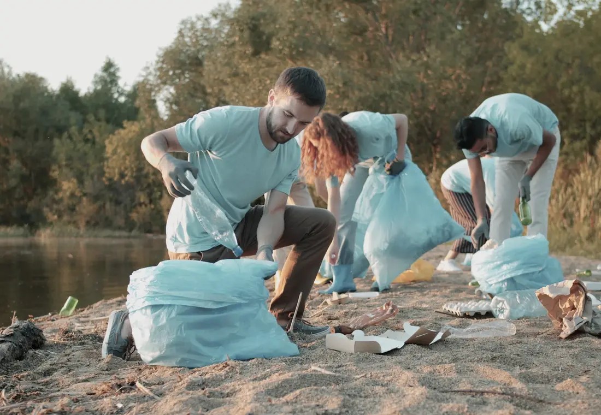
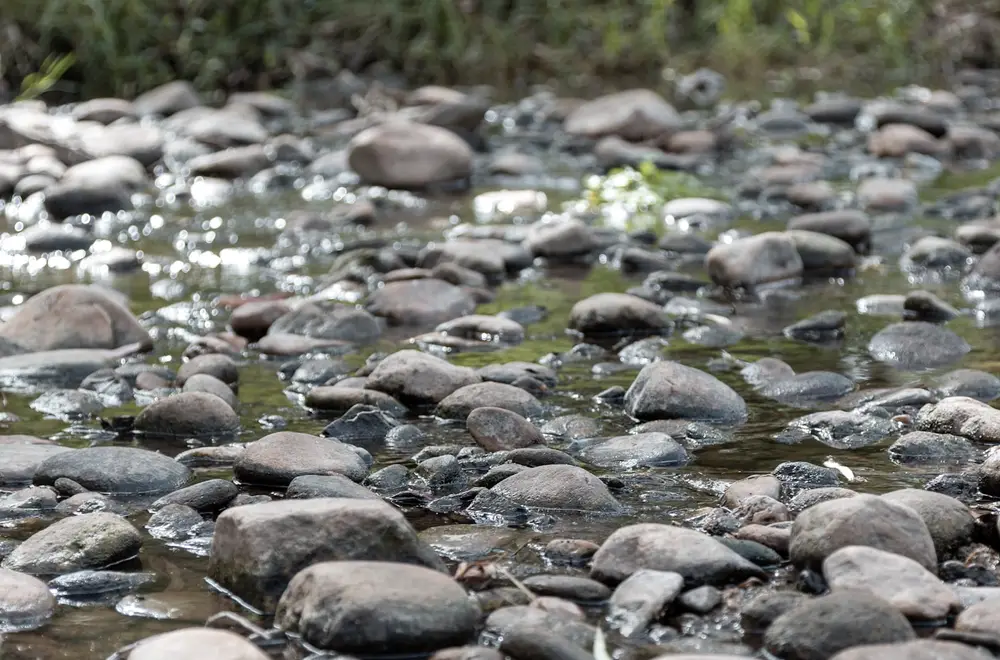

£10
Rears and releases 25 brown trout fry below Welsden weir, from Brenna broodstock.
Give £10Welsden Reach Appeal Registered charity no. 1198472
The Brenna ran clear until the weir pool silted and two banks went in 2019. Putting a river right is not complicated: fence the banks, plant them, rake the gravel, count what comes back. It is just slow, and it is done in waders, not in meetings.
£41,380 raised of £60,000
The problem
We do not do vague. These are the numbers from the reach between Welsden Bridge and Millers Meadow, and they are the numbers this appeal exists to change.
The work
Millers Meadow was fenced, planted and re-graded between 2021 and 2025, at £38 a metre. Drag the gauge board across and see what that bought. The unrestored reach below Fentley outfall still looks like the left-hand side.


The board is a river gauge from the reach it measures. Drag it, or focus it and use the arrow keys.Two photographs of the reach: restored above, unrestored below.
What it costs
Restoration is bought by the metre, the tonne and the tree, so that is how we ask for it. Last year 92p in every pound went on the river itself; the accounts are on the Charity Commission register.
£10
Rears and releases 25 brown trout fry below Welsden weir, from Brenna broodstock.
Give £10£25
Fences and plants four metres of bare bank: willow whips, stakes, and a year of checks.
Give £25£60
Buys a tonne of washed gravel, raked into a spawning riffle by the work parties.
Give £60£150
Kits out one work party for a season: waders, gloves, loppers and the first aid box.
Give £150
Work parties
Second Saturday of the month, 9.30 to 1.00. No experience needed and no standing around being thanked. Tools, waders and tea provided; bring boots that can get wet and a coat that can get worse.
Sat 12 Sep
Willow spiling at Millers Meadow
Sat 10 Oct
Gravel raking below the weir
Sat 14 Nov
Bare-root planting, Fentley bank
Sat 12 Dec
Winter bird and outfall survey

Donate
Every gift is spent on the reach this page describes. If the appeal passes its target, the surplus starts the next reach upstream; it does not disappear into admin.
